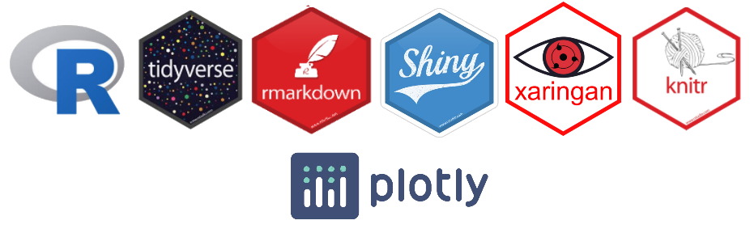

Uso principalmente software libre.

Análisis de datos con R, usando diversos paquetes como Tidyverse.
Escritura de documentos Knitr & Rmarkdown
Presentaciones Xaringan .
Gráficos interactivos Plotly
Creación de tableros dinámicos Shiny & Shinydashboard
Herramienta muy útil para la enseñanza de distribuciones de probabilidad, distribuciones muestrales, pruebas de hipótesis e intervalos de confianza.
La creación de esta página fue completamente inspirada en la página del profesor Juan Carlos Castillo de la Universidad de Chile.